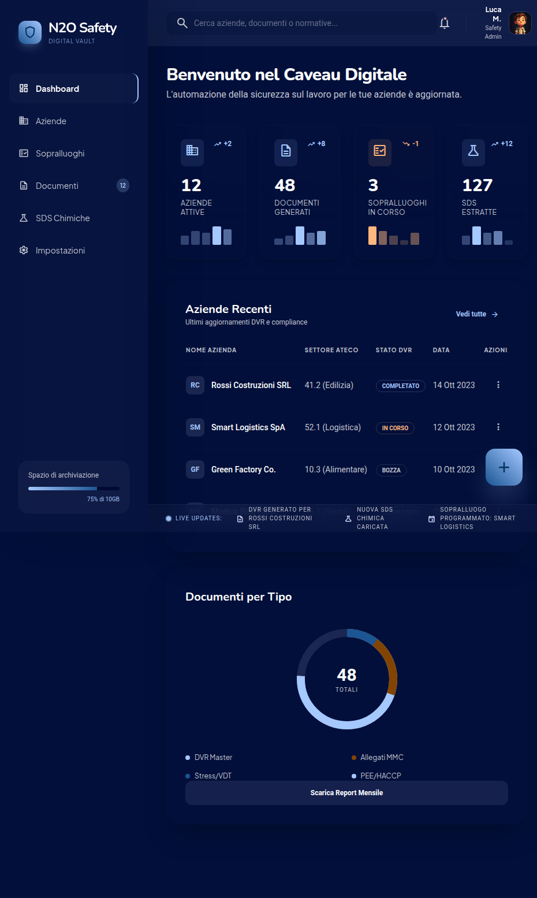
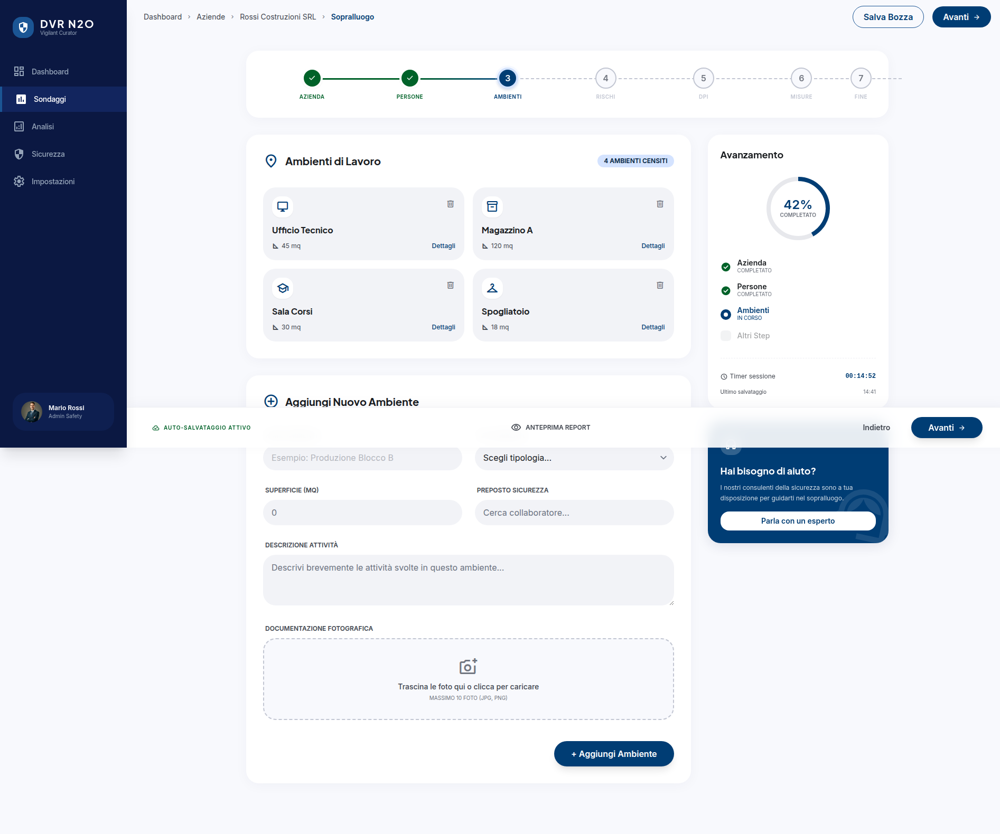
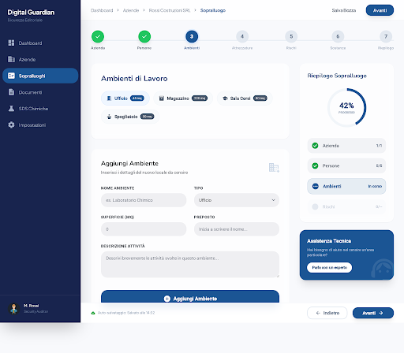
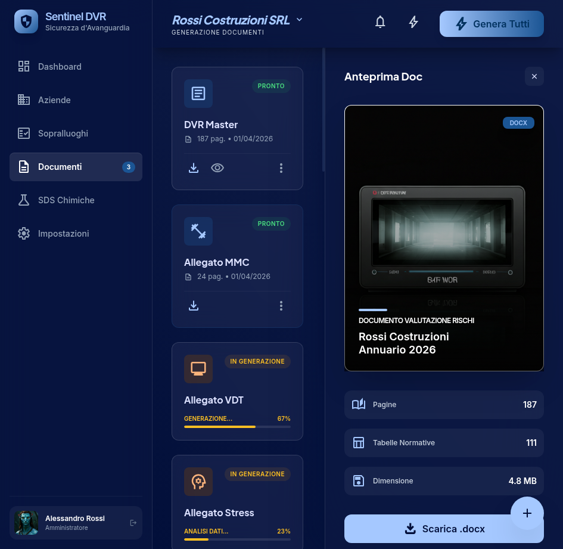

Design Templates — Anteprima Piattaforma

Pannello di controllo con panoramica aziende, documenti recenti, stato sopralluoghi e quota archiviazione.

Modulo di sopralluogo digitale con wizard guidato, raccolta dati ambienti di lavoro e rischi identificati.

Interfaccia alternativa per il sopralluogo con tema chiaro, navigazione breadcrumb e layout stepper.

Motore di generazione documenti DVR con anteprima, selezione template e monitoraggio stato generazione.
N2O SRL — Piattaforma Sicurezza sul Lavoro
Progettato da Niuexa • 2026